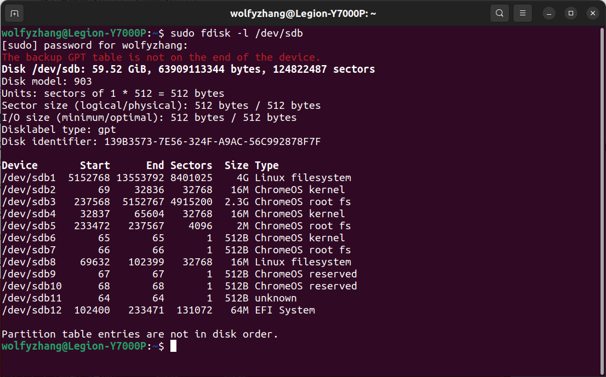

这两天 ChromeOS Flex 上线了。
ChromeOS 是个啥呢？我很喜欢老人家说的，做事情、看问题要「抓住主要矛盾」，所以首先归结到这东西的属性上去，然后再看看它与其他的同类产品有什么不同的特点：ChromeOS 是 09 年的时候 Google 推出的一款基于 Linux 内核的操作系统，这就是它的属性；ChromeOS 以 Google Chrome 作主要的 UI，主打支持 Web 应用和数据上云，后来（2016 年）逐步开始兼容 Android 和 Linux，这就是它与其他同类产品比如 Windows、macOS 和 Ubuntu Desktop 等 Linux 发行版的不同之处。
以前，ChromeOS 主要是预装在 Google 定制的硬件上，一些 ChromeBook 之类的，颇有些 Apple macOS 的风范，而现在这个 ChromeOS Flex 就是官方发布的一个支持一些第三方硬件特别是古早硬件的版本，但是仅支持 x86，不支持 ARM（Raspberry Pi 哭死）。官网说明也就一些老掉牙的路数，列举一下官方适配的设备列表，然后甩个锅——其他设备可能不受支持，你自己不懂瞎折腾把机器弄坏了或者某些功能不正常别找我。
那肯定得下下来玩一下啊。系统安装上也没什么特殊的，感觉唯一一个不同就是镜像是用 Chrome 插件的形式提供的，你得在 Chromebook Recovery Utility 这个插件里选好特定选项再全自动把镜像烧录进 USB 设备——这不就是「以 Google Chrome 作主要的 UI，主打支持 Web 应用」了嘛（流汗，烧录完镜像正常进 BIOS 重新引导就好了。
昨天有个网友也是装 ChromeOS Flex，但是这东西的安装引导流程上好像没提供分区功能，默认就抹全盘，直接把那位朋友主硬盘的连分区表带数据全干掉了，他还有 Bitlocker 加密，最后数据也没恢复完整，不过还好代码之类的有备份，损失算不太严重。我有了他的前车之鉴，就慎之又慎，最后决定不装了，简单用 USB 设备体验一下就好。
以下是系统版本截图：

由于本身基于 Linux 内核，主要也就是 UI 比较新鲜，简单看了看，发现 Shell 原生支持 Linux 和 SSH，其余的各种界面就像上面一项，很浓的 Chrome 味。相比之下，我还是对它的内部更感兴趣。
在 Linux 下挂载烧录好镜像的 USB 设备，简单 STFW 后查看到如下信息：

12 个分区，不算少，不过还好后面有对应说明，再对照着文档看一下，每个分区的信息如下：
| Partition | Usage | Purpose |
|---|---|---|
| 1 | user state, aka “stateful partition” | User’s browsing history, downloads, cache, etc. Encrypted per-user. |
| 2 | kernel A | Initially installed kernel. |
| 3 | rootfs A | Initially installed rootfs. |
| 4 | kernel B | Alternate kernel, for use by automatic upgrades. |
| 5 | rootfs B | Alternate rootfs, for use by automatic upgrades. |
| 6 | kernel C | Minimal-size partition for future third kernel. There are rare cases where a third partition could help us avoid recovery mode (AU in progress + random corruption on boot partition + system crash). We decided it’s not worth the space in V1, but that may change. |
| 7 | rootfs C | Minimal-size partition for future third rootfs. Same reasons as above. |
| 8 | OEM customization | Web pages, links, themes, etc. from OEM. |
| 9 | reserved | Minimal-size partition, for unknown future use. |
| 10 | reserved | Minimal-size partition, for unknown future use. |
| 11 | reserved | Minimal-size partition, for unknown future use. |
| 12 | EFI System Partition | Contains 64-bit grub2 bootloader for EFI BIOSes, and second-stage syslinux bootloader for legacy BIOSes. |
具体信息表格里说的都很清楚了，